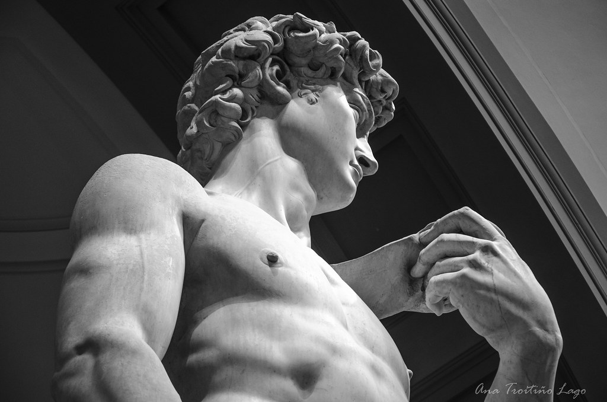

Leonardo da Vinci era vegetariano. Hay indicios de que por lo menos durante una parte de su vida da Vinci sí fue vegetariano. Por cierto, era tanto el aprecio de Leonardo hacia los animales que a él le gustaba comprar pájaros enjaulados en los mercados para luego soltarlos.

La losa de mármol que utilizó Miguel Ángel para crear el famoso ‘David’ es reciclada. El bloque de mármol que se utilizó para crear esta famosa escultura de Miguel Ángel fue cortado originalmente para que lo utilizara Agostino di Duccio, unos 40 años antes de que se terminara el David. En un inicio destinada para una escultura de Hércules en la Catedral de Florentina, luego de una discusión con el párroco, Di Duccio abandonó el proyecto y la losa quedó varias décadas sin usar. Durante los años, distintos artistas intentaron utilizar el bloque abandonado, sin embargo, al ser tan difícil de manejar el mármol todos lo abandonaron. Al final la piedra terminó en manos de Miguel Ángel en el año 1501 y todo lo demás es historia.
Hay varias versiones originales de “El Grito”. Considerada por muchos como una de las pinturas más reconocibles en el mundo del arte, “El Grito” de Edvard Munch tiene por lo menos 5 versiones diferentes. Las primeras versiones fueron bosquejos hechos con pinturas pastel al óleo a inicios de la década de 1890. Otra versión creada con pasteles fue pintada en el año 1896 y una con litografía en 1897. La última versión (el cuadro que todos conocemos), fue pintado en 1910.